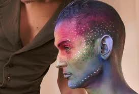

Listin, Blogspot.com
|
Dennis Agerblad sings Tóroddur Poulsen 3.september verður nýggja fløgan hjá Dennis Agerblad alment givin út. Fløgan eitur "Dennis Agerblad sings Tóroddur Poulsen Málhøvd / Sproghoved". Talan er um eina sera áhugaverda dupultfløgu, har Málhøvd er heitið á føroysku versiónini, meðan Sproghoved er danska versiónin. Dennis greiðir frá, at verkætlanin byrjaði við, at hann gjørdi lag til eina yrking hjá Tóroddi, sum eitur "Lending". "Tí hon var bygd upp av versum og vers 2 stóð í kursiv sum um tað var eitt niðurlag. Eg sendi lagið til Tórodd Poulsen og spudi um hann hevði fleiri yrkingar sum vóru uppbygdar á sama hátt, tí tað var lætt at gera tónleik til og syngja. -Hetta er forbannað gott, helt hann. Honum dámdi tað altso væl og hann helt, at allar hansara yrkingar kunnu syngjast. -Áh ja sjálvandi tonkti eg og byrjadi at gera fleiri løg. Eg spældi hetta fyri vinum í Danmark, sum hildu, at tað ljóðaði feitt, -men hvat syngir tú um? Síðani sang eg tað inn á donskum og soleiðis bleiv tað til ein dupultfløgu...".Á tí fyrstu musikkvideoini, sum Dennis Agerblad hevur gjørt til hesa verkætlanina, hevur hann kombinerað niðurlagið úr donsku og føroysku versiónina av yrkingini "Flaggið". Dennis Agerblad arbeiðir í løtuni uppá 4 videoløg til Málhøvdfløguna, har "Flaggið" var tað, sum var fyrst liðugt. Tutl gevur fløguna út og Tunga musiK, sum plátufelagið hjá Dennis Agerblad eitur, gevur út download av tónleikinum. www.tungamusik.dk Á fløguni eru hesi løgini: 1. Vælkomin 2. Flaggið 3. Dun 4. Tað sama sum eg 5. Málhøvd 6. Tit sum duga at floyta 7. Hipp og hopp 8. Blómur 9. Lending 10. Ást 11. Góða morgun 12. Vón www.dennisagerblad.dk/ www.facebook.com/dennisagerblad www.youtube.com/dennisagerblad flaggið hongur og veittrar í vindinum hvat skuldi tað annars gjørt ein slíkan dag sum í dag tá trøini leggja seg sjálvboðin niður til jarðar og bilarnir koyra á bláman so førararnir kunnu kenna seg sum fiskar og royna tann spennandi taran og algurnar áðrenn teir aftur slepp sær upp á turt og koma inn í stovun hjá mær at verma seg framman fyri ovninum sum eg havi kynt upp við øllum mínum bókum um dreymar og dreymatýðingar og borðinum har á eg skrivaði yrkingar um tað sitandi á tí stólinum sum eg havi gloymt til eg einaferð aftur vakni og skal út at taka flaggið niður úr vindinum Tóroddur Poulsen. Á síðu 7 í Morgunbókini (KP) listinblog.blogspot.com/2011/08/dennis-agerblad-sings-toroddur-poulsen.html |